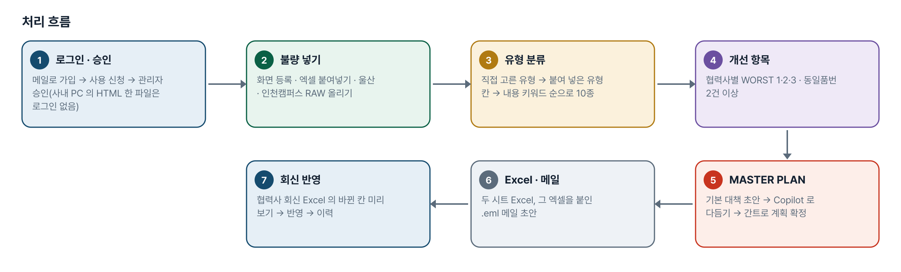
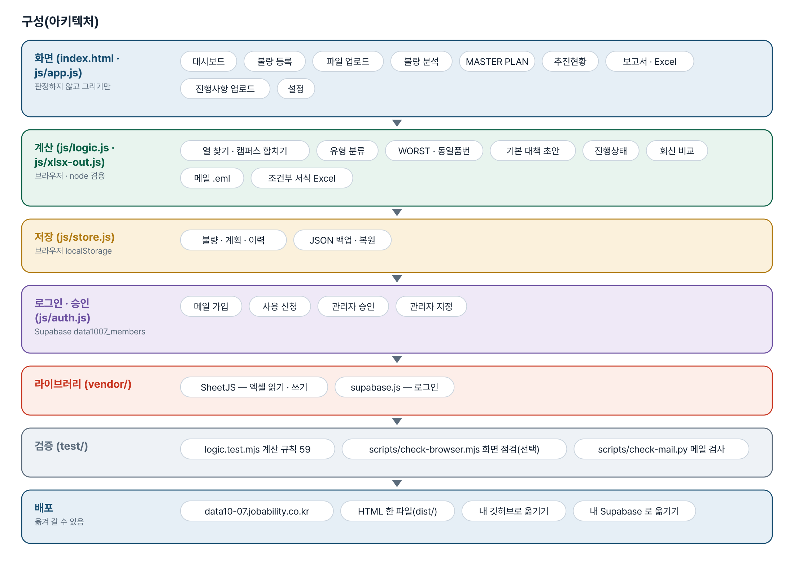
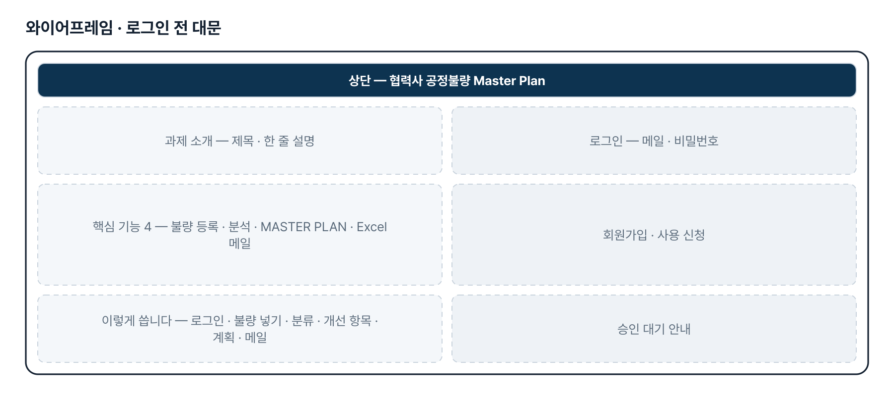
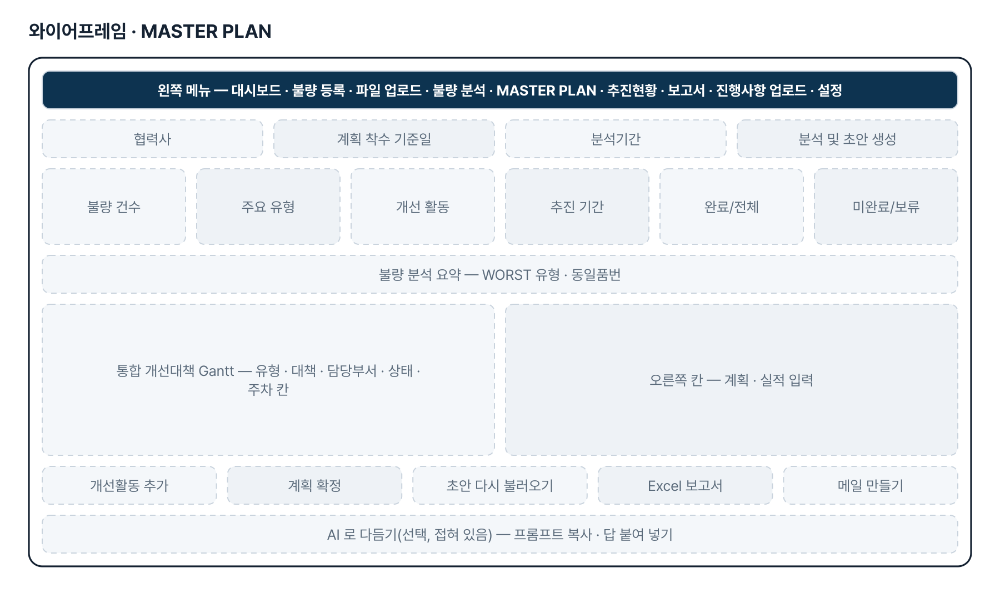
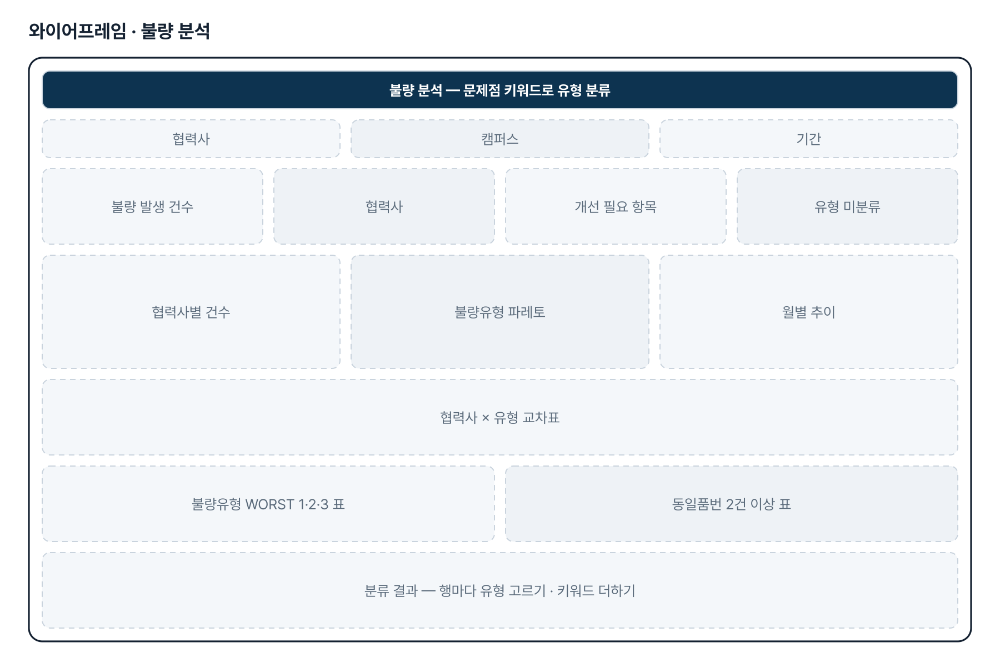
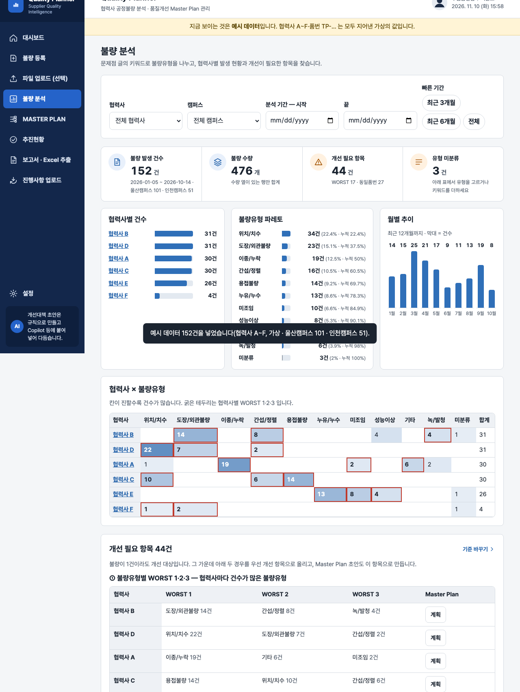

기획서 내려받기
파이프라인 · 아키텍처 · 와이어프레임 · 개발일지가 들어간 워드 문서입니다. 버전마다 따로 남깁니다.
| 버전 | 날짜 | 바뀐 점 | 파일 |
|---|---|---|---|
| v2.0 | 2026-11-10 | 최종 기획서 — 파이프라인 · 아키텍처 · 와이어프레임 정리 / 로그인 · 사용 신청 · 관리자 승인(요청자 Supabase 로 옮길 수 있게) / 로그인 전 대문 / HTML 한 파일 안내에서 옛 사이트 주소를 뺌(옮겨도 깨지지 않게) | 워드 내려받기 |
요구사항과 구현
| 기획서 요구 | 구현 |
|---|---|
| 공정불량 자동 분석 — 업로드 → 협력사별 불량유형 분류 · 발생 현황 · 주요 개선 필요 항목 | 불량 등록 · 엑셀 붙여넣기(기본)와 파일 업로드(선택), 불량유형 10종 키워드 분류, 파레토 · 월별 추이 · 협력사×유형 교차표, WORST 1·2·3 · 동일품번 2건 이상 |
| 개선 Master Plan 자동 생성 — 개선대책 · 담당부서 · 추진 일정 초안 | 유형별 기본 대책 규칙으로 초안, 담당부서 5종(협력사 내부), 「프롬프트 복사 → Copilot 에 붙여 넣기」로 다듬기 |
| 간트차트 기반 계획 · 실적 관리, 상태별 색 | 주차 · 월 간트(계획 · 실적 막대, 오늘 선), 진행상태 4가지 음영(완료 초록 · 진행중 주황 · 미완료 빨강 · 보류 회색), 계획 확정 이력 |
| Excel 보고서 자동 출력 | 「불량목록」 · 「MASTER PLAN」 두 시트, 협력사가 고치는 칸 표시, 진행상태 고르기 목록 + 조건부 서식 |
| 울산 · 인천캠퍼스 RAW DATA 구분(4차) | 캠퍼스 칸 2개 업로드 — 열 구성이 달라도 자동 연결, 캠퍼스 안에서만 중복 제거, 다시 올리면 그 캠퍼스만 바뀜, 캠퍼스 거르기 |
| 아웃룩 연동 메일(4차) | 설정의 수신 1~3 · 참조 1~3 · 초안, 그 협력사 MASTER PLAN 엑셀을 붙인 .eml(아웃룩이 새 메일로 엶)과 mailto |
| 협력사 회신으로 진행사항 갱신(3차) | 진행사항 업로드 — 숨긴 ID 로 행 맞추기, 바뀐 칸 미리 보기 · 충돌 고르기 · 반영 · 이력 |
| 사내망 사용 · 사내 PC 에서 HTML 로만 | 외부 서버 · CDN 을 부르지 않음, 도구 전체를 HTML 한 파일로 받아 더블클릭 |
| 가능하다면 사외망에서 접속 | 사이트 주소에 로그인 · 사용 승인을 붙임(이번 판). 업무 자료 공유 저장은 2단계 |
그림으로 보기






개발일지
2026-11-10 · 최종 기획서 · 로그인
- 로그인 · 사용 신청 · 관리자 승인 키트 적용(data1007_members)
- 로그인 전 대문 문구를 기획서에서 만듦
- HTML 한 파일 판 안내의 옛 사이트 주소 하드코딩을 뺌(js/app.js)
- 최종 기획서(워드 · plan.html) · README 정리
- 계산 규칙 59개 통과 · dist 다시 만들기는 판 올릴 때
2026-10-28 · 4차 반영
- 캠퍼스별 RAW DATA — 줄 단위 열 찾기(matchRow), replaceCampus, 캠퍼스 거르기
- 진행상태 4가지 · 진행률 삭제 · Excel 조건부 서식
- 아웃룩 메일 .eml(받는 사람 · 참조 · 첨부) · mailto, check-mail.py
- 테스트 60개
2026-10-27 · 3차 반영
- 담당부서 5종 · 불량유형 10종 · WORST 1·2·3 · 동일품번
- Copilot 붙여 넣기 · Excel 두 시트 · 진행사항 업로드(미리 보기 · 충돌 · 이력)
- HTML 한 파일(scripts/build-single.mjs)
2026-10-21 · 2차 반영
- 불량 등록 화면 · 엑셀 붙여넣기를 기본 경로로
- 불량유형 8종, 화면 그대로 Excel 6시트, 외부 요청 0
2026-10-20 · 1단계
- 업로드 · 분석 · Master Plan · 간트 · 보고서 — 가상 데이터(협력사 A~F)